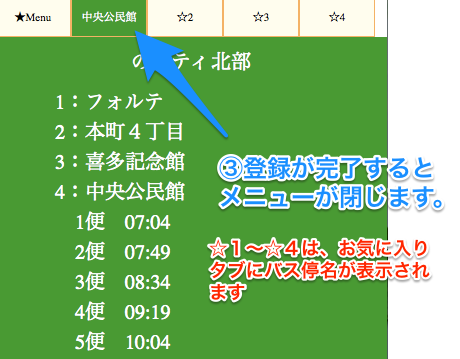
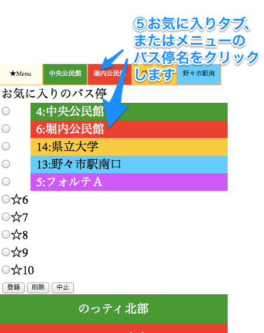
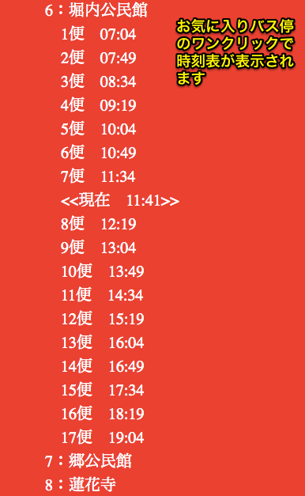
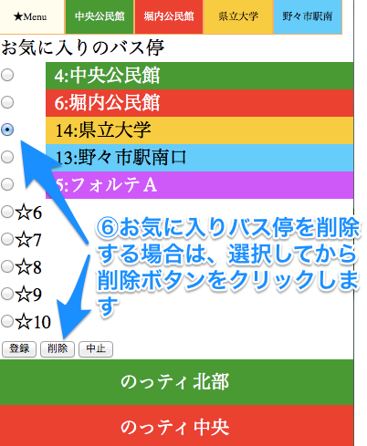
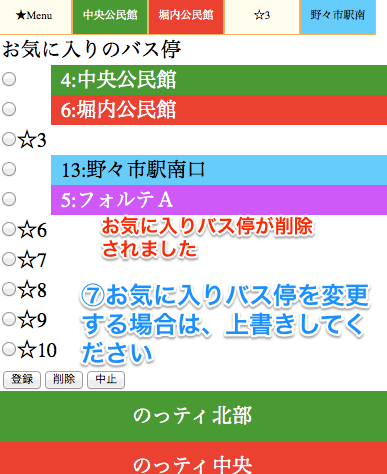

1.はじめに
このWEBアプリは、パソコンとスマートフォン両方のWEBブラウザで動作することを前提にしています。
それぞれのWEBブラウザのブックマークに登録すれば、素早く表示させることができます。
特にスマートフォンでは、ホーム画面にショートカットを作成すれば、ワンクリックでアプリを表示することができます。
【ショートカット用のアイコン】
ショートカットの作成方法は、iphone、andloidなどの機種ごとに異なりますので、それぞれのマニュアルを参照してください
また、このアプリでは、HTML5仕様のmanifest機能を使用していすので、manifest機能に対応したWEBブラウザでは、インターネットが接続されていない場合（オフライン状態）でも時刻表を表示することができます。
2．初期画面
初期画面には、のっティ、のんキーと北陸鉄道石川線のルート名が、それぞれ表示されます。
基本的には、①ルートをクリック、②バス停をクリックして、目的のバス停の時刻表を表示させます。
・よく使うバス停は、「お気に入り」に登録しておくことで、ワンクリックで表示することができます。
・タイトルをクリックすると取扱説明が表示されます。

①まず、ルートをクリックします。
クリックしたルートの下に、バス停一覧が表示されます。
②次に、バス停をクリックします。
バス停の下に、時刻表が表示されます。
③必要により、バス便をクリックすると、便ごとの各バス停の時刻表が表示されます。
３．お気に入りのバス停
お気に入りのバス停は、最大１０カ所登録できます。
但し、初期画面に表示されるタブは最初の４カ所だけです。
基本的には、①登録するバス停の時刻表を表示させる、②登録する位置（☆１〜☆１０）を指定する、という手順となります。
バス停が選択されていないとエラーが表示されます。
登録されると、お気に入りのタブにルートカラーとバス停名が表示されます。（☆１〜☆４だけ）
③同時に、お気に入りメニューが一旦閉じます。

お気に入りメニュー内にも登録されています。
④バス停を変更する場合は、上書きしてください。

お気に入りバス停の登録例
⑤お気に入りのタブまたは、メニューのバス停名のワンクリックで時刻表が表示されます。

ワンクリックで表示された例

⑥お気に入りのバス停を削除する場合は、削除ボタンをクリックします。

削除された例
⑦お気に入りのバス停を変更する場合は、上書きしてください。
